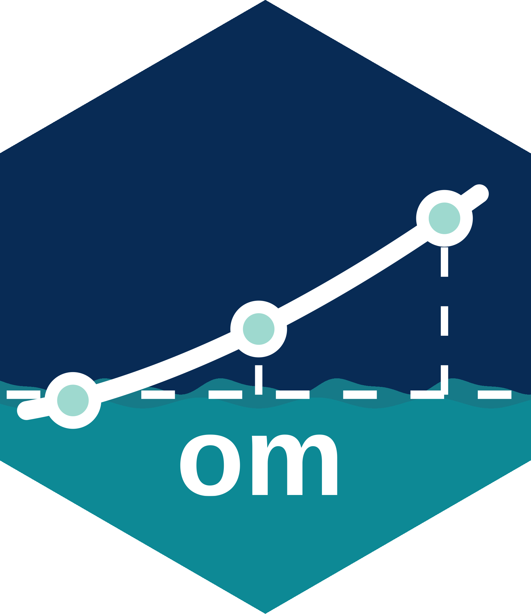

Package index
-
array2dfr() - Cast array to data frame
-
`[<-`(<distribution>,<ANY>,<missing>,<numeric>)distribution() - Class containing a probability distribution
-
dynplot() - Plot dynamics from
omobject -
lambda() - Extract growth rate
-
load_bias() - Load bias
-
load_cvs() - Load coefficients of variation
-
load_pars()update_pars() - Load or update parameters
-
load_quantiles() - Load quantiles
-
load_rmax() - Load maximum intrinsic growth parameter
-
load_rps() - Load reference point targets.
-
logitnorm_pars() - Retrieve parameters of logitnormal distribution
-
objplot() - Plot performance diagnostics over time
-
om() - Operating model class
-
om_hdo - Hector's dolphin
-
pdyn() - Population dynamics function
-
phi()`phi<-`() - Access or assign phi parameter
-
plot(<distribution>) - Plot function for distribution class
-
rp() - Stochastic reference point calculation
-
sample() - Sample from distribution class object
-
samples()`samples<-`() - Specify number of samples
-
shape()`shape<-`() - Calculate shape
-
spf() - Surplus production function
-
summary(<distribution>)expectation() - Summarise distribution class object
-
targets()diagnostics(<om>)pst(<om>)objectives(<om>)pars(<om>)settings(<om>)numbers(<om>) - Access slots within an
omobject. -
values() - Values calculated by the population dynamics function